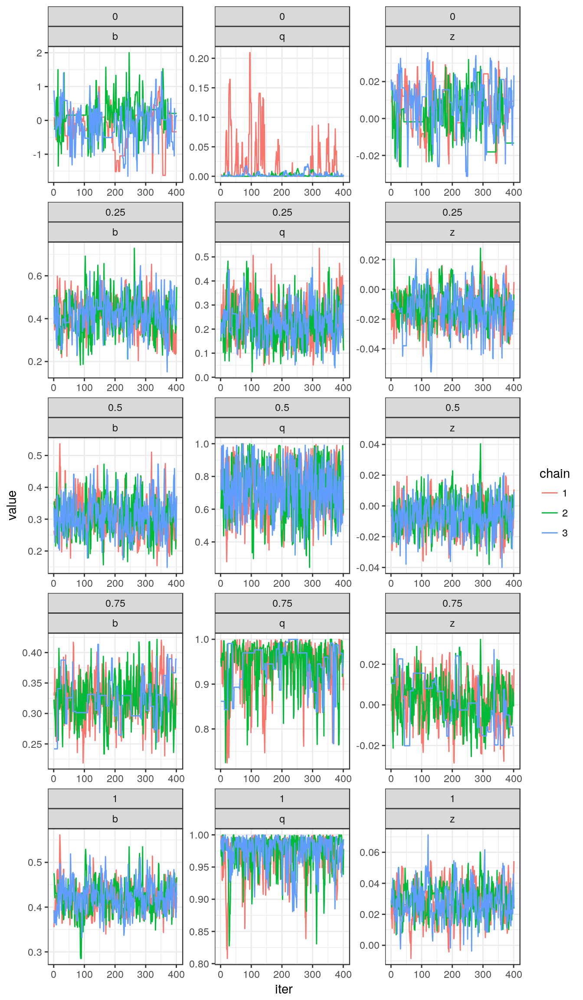
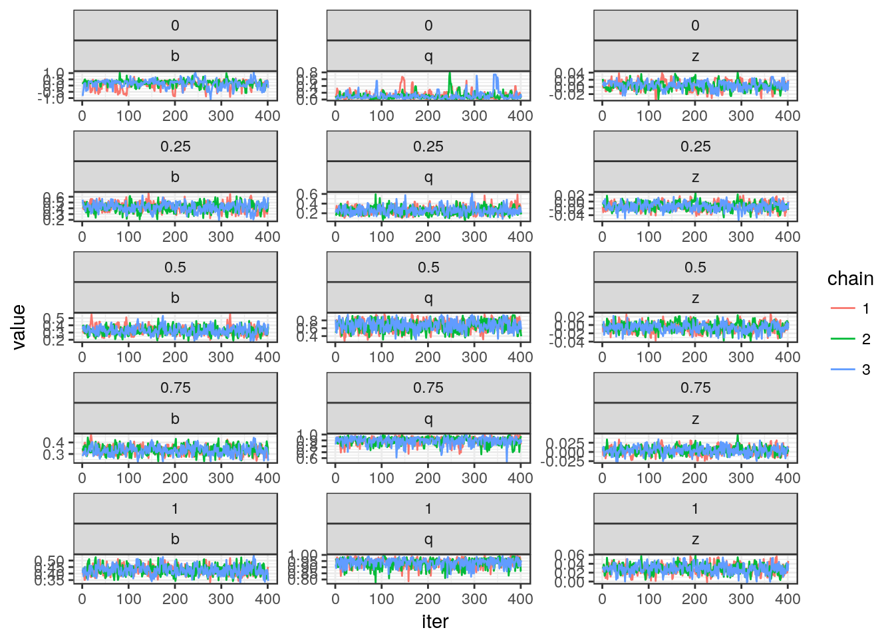
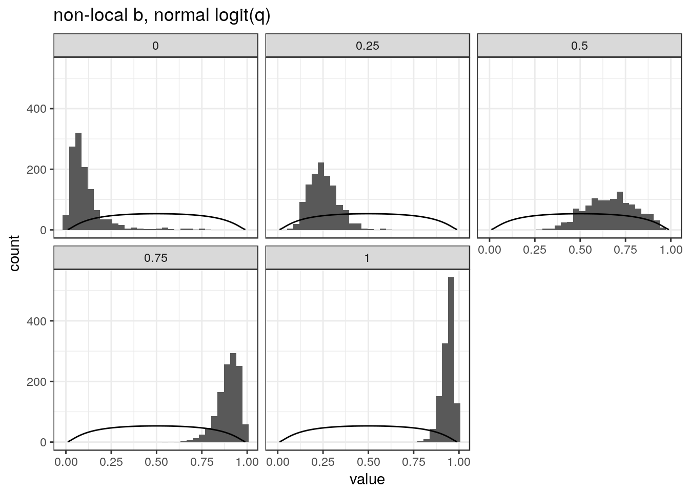
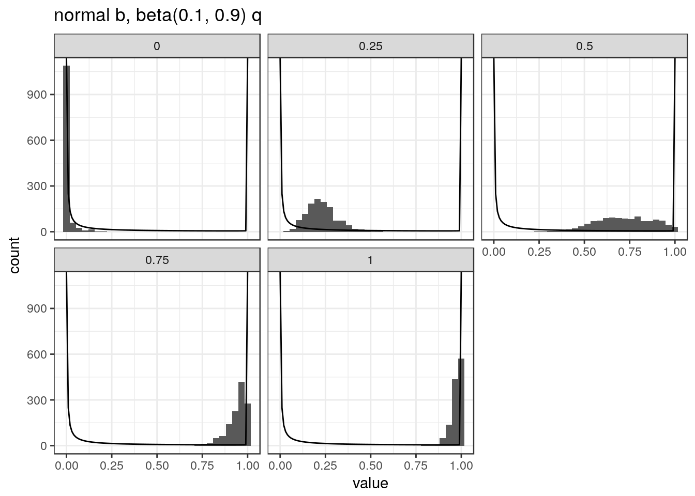

In this document I will compare different priors for fitting the b-q model described here. Here we are primarily focused on fitting the shared model.
For all experiments, we place a prior on \(z = tanh^{-1}(\rho)\) of \(z \sim N(0, 0.5)\) and the MH sampler will sample values of \(z\) rather than \(\rho\). We will alsways run three chains of the sampler with length 4000 samples. We discard the first 2000 samples as burn-in and thin the remaining samples to retain only every 5th sample. The grids of mixture proportions were pre-computed as the MAP estimates.
For these experiments I will use five simulated data sets. Each is simulated under the b-q model with b=0.5 and \(q\) equal t0 \(0, 0.25, 0.5, 0.75\) and 1. These are single realizations from an early set of simulations I ran described here. These simulations have fairly strong signal and have on average 500 variants effecting trait 1 and 1000 variants effecting trait 2.
Priors:
library(sherlockAsh)
#Set priors
z_prior_func <- function(z){ dnorm(z, 0, 0.5, log=TRUE)}
zsamp <- function(n){rnorm(n, 0, 0.5)}
b_prior_func <- function(b){dnorm(b, 0, 0.6, log=TRUE)}
bsamp <- function(n){rnorm(n, 0, 0.6)}
q_prior_func <- function(q){dbeta(q, 0.1, 0.9, log=TRUE)}
qsamp <- function(n){runif(n, 0, 1)}
#Starting variance of sampling distribution
prop_sigma <- c(1e-4, 1e-4, 1e-4)
res <- list()
q <- c(0, 0.25, 0.5, 0.75, 1)
for(i in 1:5){
D <- readRDS(paste0("../data/test_data_easy/q", q[i], "_draw.RDS"))
dat <- D$dat
grid <- readRDS(paste0("../data/test_data_easy/q", q[i], "_grid.RDS"))
res[[i]] <- mh_compare2(dat, grid, logitq=F, seed=1e8, models=3,
z_prior_func = z_prior_func, zsamp=zsamp,
b_prior_func = b_prior_func, bsamp=bsamp,
q_prior_func = q_prior_func, qsamp=qsamp,
prop_sigma = prop_sigma,
nchain=3, niter_perchain=4000, burn_in = 2000, thin=5,
return_mh=TRUE)
}
saveRDS(res, file="../data/test_data_easy/res1.RDS")Trace plots for all five data sets

The following table shows 90% credible intervals for each of the three parameters as well as acceptance rates for all three chains.
| q | acceptance_rate | qci | bci | zci |
|---|---|---|---|---|
| 0.00 | 0.145,0.2295,0.2385 | 0,0.04 | -1.05,0.68 | -0.02,0.02 |
| 0.25 | 0.4585,0.4495,0.3215 | 0.11,0.38 | 0.28,0.54 | -0.03,0.01 |
| 0.50 | 0.444,0.4565,0.469 | 0.46,0.96 | 0.22,0.41 | -0.02,0.01 |
| 0.75 | 0.3595,0.3715,0.027 | 0.84,1 | 0.26,0.39 | -0.02,0.02 |
| 1.00 | 0.3195,0.3485,0.368 | 0.91,1 | 0.37,0.48 | 0.01,0.05 |
This combination of priors can sometimes lead to low acceptance rates as in the case of the third chain with \(q=0.75\). For the most part, the credible intervals overlap the target parameter values or are close. The credible intervals for \(b\) are all slightly low (in this case \(b = 0.5\)) when \(q > 0\).
Priors:
#Set priors
z_prior_func <- function(z){ dnorm(z, 0, 0.5, log=TRUE)}
zsamp <- function(n){rnorm(n, 0, 0.5)}
b_prior_func <- function(b){
log((b/0.4)^2) + dnorm(b, 0, 0.4, log=TRUE)
}
bsamp <- function(n){rnorm(n, 0, 0.6)}
q_prior_func <- function(logitq){dnorm(logitq, 0, 1.2, log=TRUE)}
qsamp <- function(n){logit(runif(n, 0, 1))}
#Starting variance of sampling distribution
prop_sigma <- c(1e-4, 1e-4, 1e-4)
res <- list()
q <- c(0, 0.25, 0.5, 0.75, 1)
for(i in 1:5){
D <- readRDS(paste0("../data/test_data_easy/q", q[i], "_draw.RDS"))
dat <- D$dat
grid <- readRDS(paste0("../data/test_data_easy/q", q[i], "_grid.RDS"))
res[[i]] <- mh_compare2(dat, grid, logitq=T, seed=1e8, models=3,
z_prior_func = z_prior_func, zsamp=zsamp,
b_prior_func = b_prior_func, bsamp=bsamp,
q_prior_func = q_prior_func, qsamp=qsamp,
prop_sigma = prop_sigma,
nchain=3, niter_perchain=4000, burn_in = 2000, thin=5,
return_mh=TRUE)
}
saveRDS(res, file="../data/test_data_easy/res2.RDS")Trace plots for all five data sets

| q | acceptance_rate | qci | bci | zci |
|---|---|---|---|---|
| 0.00 | 0.292,0.3185,0.295 | 0.02,0.3 | -0.45,0.5 | -0.02,0.02 |
| 0.25 | 0.4855,0.4595,0.454 | 0.14,0.39 | 0.3,0.54 | -0.03,0.01 |
| 0.50 | 0.442,0.4635,0.451 | 0.44,0.89 | 0.24,0.42 | -0.02,0.01 |
| 0.75 | 0.442,0.4415,0.457 | 0.78,0.97 | 0.27,0.39 | -0.01,0.02 |
| 1.00 | 0.453,0.4555,0.48 | 0.87,0.98 | 0.37,0.49 | 0.01,0.05 |
The credible intervals using this set of priors is quite similar to the ones in the previous section. They are a bit smaller and the sampler did not have as much trouble with low acceptance rates. Note that in this scheme, the intervals for \(q\) cannot include 0 or 1 because we are sampling on the \(logit(q)\) scale but have transformed back to the original scale to compute intervals.
I tried sampling from the posterior of \(logit(q)\) using the first set of priors to see if this improves the acceptance rate, however, this had the opposite effect. I found that the variance of the proposal distribution tended to end up too large in the adaptive MH algorithm, leading to acceptance rates of zero:
| q | acceptance_rate | qci | bci | zci |
|---|---|---|---|---|
| 0.00 | 5e-04,5e-04,5e-04 | 0,0 | 1.37,6.01 | -0.02,0.17 |
| 0.25 | 0.4325,0.4455,0.4475 | 0.09,0.34 | 0.3,0.57 | -0.03,0.01 |
| 0.50 | 5e-04,5e-04,5e-04 | 1,1 | 0.1,0.16 | -0.03,0.02 |
| 0.75 | 5e-04,5e-04,5e-04 | 1,1 | 0.12,0.23 | 0,0 |
| 1.00 | 5e-04,5e-04,5e-04 | 1,1 | 0.37,0.39 | 0.02,0.05 |
Plots below show histograms of posterior samples of \(q\). The solid lines show the prior density.
## `stat_bin()` using `bins = 30`. Pick better value with `binwidth`.
## `stat_bin()` using `bins = 30`. Pick better value with `binwidth`.## Warning: Removed 2 rows containing missing values (geom_path).